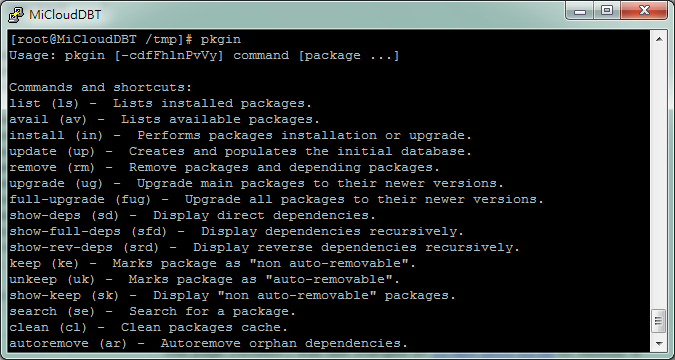

Back to Wiki
Back to Wiki
Pkgin Usage
pkgin這個command是關於SmartOS套件的相關安裝與維護指令。
您可以在putty或是類似的terminal工具連線至SmartOS後，輸入pkgin即可查詢pkgin的指令後面能接的command說明。
[root@MiCloudDBT /tmp]# pkgin]([root@MiCloudDBT /tmp# pkgin)
Usage: pkgin [-cdfFhlnPvVy] command [package ...]](Usage: pkgin [-cdfFhlnPvVy command [package ...])
Commands and shortcuts:
list (ls) - Lists installed packages.
avail (av) - Lists available packages.
install (in) - Performs packages installation or upgrade.
update (up) - Creates and populates the initial database.
remove (rm) - Remove packages and depending packages.
upgrade (ug) - Upgrade main packages to their newer versions.
full-upgrade (fug) - Upgrade all packages to their newer versions.
show-deps (sd) - Display direct dependencies.
show-full-deps (sfd) - Display dependencies recursively.
show-rev-deps (srd) - Display reverse dependencies recursively.
keep (ke) - Marks package as "non auto-removable".
unkeep (uk) - Marks package as "auto-removable".
show-keep (sk) - Display "non auto-removable" packages.
search (se) - Search for a package.
clean (cl) - Clean packages cache.
autoremove (ar) - Autoremove orphan dependencies.
下面介紹幾個較常使用的command(list、search、install、remove):
List：
列出該台SmartOS您已經安裝的套件，輸入指令如下：
pkgin list
Search：
搜尋您想要安裝的軟體，輸入指令如下：
pkgin search [軟體名稱]](pkgin search [軟體名稱)
ex:pkgin search postgre
Install：
安裝您剛剛搜尋到的套件，輸入指令如下：
pkgin install [套件名稱(使用pkgin search查詢)]](pkgin install [套件名稱 - 使用pkgin search查詢)
ex:pkgin install postgresql90-adminpack-9.0.4
Remove:移除套件您已安裝的套件，輸入指令如下：
pkgin remove [套件名稱(使用pkgin list查詢)]](pkgin remove [套件名稱 - 使用pkgin list查詢)
ex:pkgin remove postgresql90-adminpack-9.0.4
若您需要安裝的軟體在search時找不到相關的套件時，可使用以下指令：
wget [軟體壓縮檔連結網址]](wget [軟體壓縮檔連結網址)
wget ftp://ftp.ruby-lang.org//pub/ruby/1.9/ruby-1.9.2-p0.tar.gz
gtar xvzf [軟體壓縮檔]](gtar xvzf [軟體壓縮檔)
gtar xvzf ruby-1.9.2-p0.tar.gz
cd [軟體資料夾]](cd [軟體資料夾)
cd ruby-1.9.2-p0
./configure
gmake
ls
sudo gmake install
ruby -v